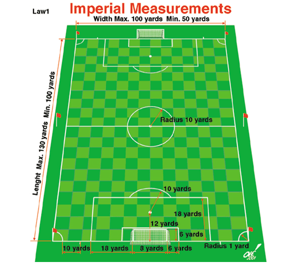
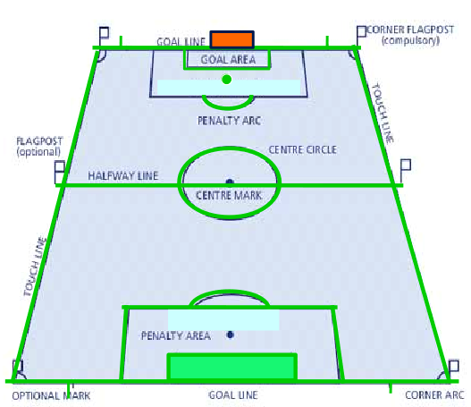
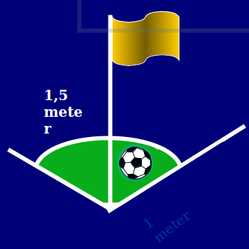
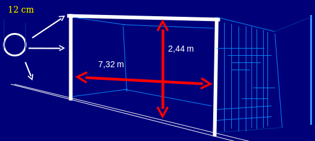
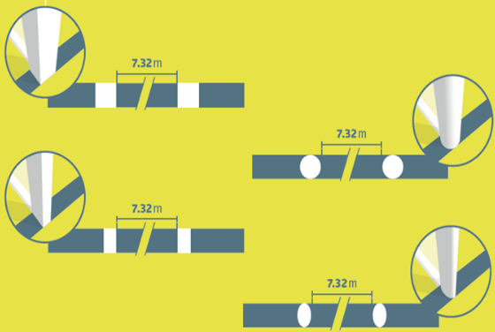
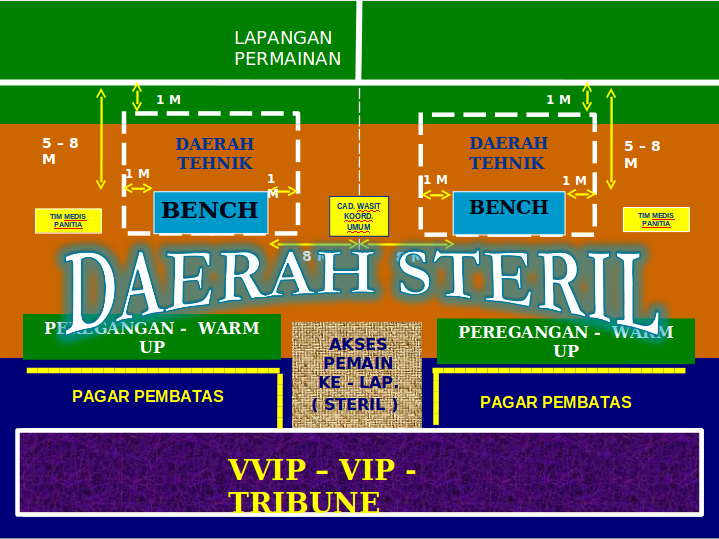
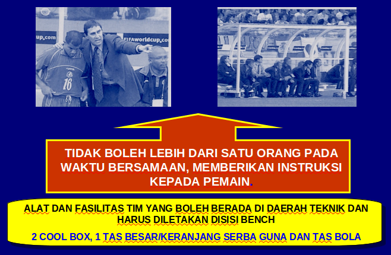

Garis Lapangan
- LAPANGAN PERMAINAN DITANDAI DENGAN GARIS
- LEBAR GARIS TIDAK LEBIH 5 inci (12 cm)
- GARIS PANJANG DISEBUT GARIS SAMPING
- GARIS PENDEK DISEBUT GARIS GAWANG
- GARIS GAWANG SAMA LEBAR DENGAN UKURAN TIANG DAN PALANG GAWANG
- GARIS ADALAH BAGIAN DARI DAERAH LAPANGAN PERMAINAN YANG DILIPUTINYA
- LAPANGAN PERMAINAN DIBAGI DUA BAGIAN YANG DIBATASI OLEH GARIS TENGAH
- TITIK TENGAH DI PERTENGAHAN GARIS TENGAH DIKELILINGI LINGKARAN DENGAN RADIUS 9,15 M
Marka Lapangan
Ditandai garis, garis-garis ini termasuk dalam daerah permainan, yang dibatasi :
- Lebar garis , tidak lebih 12 cm ( 5 inchi )
- Lapangan dibagi dua bagian oleh garis tengah
- Titik tengah dibuat pada pertengahan garis tengah, dikelilingi linglingkaran, radius 9,15 m
Daerah Gawang ( The Goal Area )
- Dibuat pada masing-masing ujung lapangan
- Dibuat garis tegak lurus dengan garis gawang pada sisi kiri dan kanan gawang, jarak 5,5 m
Daerah Pinalti ( The Penalty Area )
- Dibuat pada masing-masing ujung lapangan
- Dibuat garis tegak lurus dengan garis gawang pada sisi kiri & dan kanan gawang, jarak 16,5 m
- Didalam daerah pinalti diberi sebuah titik pinalti, jarak 11 m dari garis gawang
- Diluar daerah pinalti dibuat busur dengan radius 9,15 m dari titik pinalti
Gambar Lapangan


Tiang Bendera
Pada setiap sudut lapangan ditempatkan tiang bendera sudut dengan tinggi tidak kurang dari 1,5 m

BUSUR TENDANGAN SUDUT ( The Corner Flag )
- Pada bagian sudut lapangan dibuat busur dengan radius 1 m dari tiang bendera sudut
Marka Lapangan
- Terang
- Tahan
- Tidak Bertimbul
- Tidak Berparit
Tiang dan Palang Gawang (GOALS)
Di tengah masing-masing garis gawang, ditempatkan gawang yang terdiri dari :
- Dua tiang tegak lurus, sama jaraknya dari tiang bendera sudut yang dihubungkan secara horizontal oleh sebuah mistar/palang gawang

Pengamanan
- Gawang harus tertanam dengan aman kedalam tanah.
- Gawang portable dapat digunakan bila sudah memenuhi ketentuan
KEPUTUSAN DEWAN ASOSIASI SEPAKBOLA INTERNASIONAL (IFAB)
- Mistar gawang jatuh atau rusak, diperbaiki sampai selesai, jika tidak selesai, pertandingan ditunda/ di batalkan, pertandingan lanjutan dimulai dengan bola wasit (dropped-ball)
- Dilarang memasang iklan di lapangan permainan, perlengkapan lapangan, daerah teknik, jarak < 1 m dari garis samping, daerah antara garis gawang dan jaring gawang
POSISI TIANG GAWANG DALAM KAITANNYA DENGAN GARIS GAWANG HARUS SESUAI DENGAN GRAFIK DIBAWAH INI

PENGATURAN AREA TEKNIK

Daerah Teknik (Technical Area)
- MERUPAKAN PERLUASAN DAERAH TEMPAT DUDUK YANG DITENTUKAN DENGAN JARAK 1 M KE SAMPING KIRI DAN KANAN SERTA KE DEPAN 1 M DARI GARIS SAMPING.
DIBUAT TANDA UNTUK MENENTUKAN BATAS DAERAH INI.
- JUMLAH ORANG YANG DIIJINKAN BERADA DI DAERAH TEKNIK DITETAPKAN DALAM PERATURAN KOMPETISI.
- ORANG YANG BERADA DI DAERAH TEKNIK SUDAH DI IDENTIFIKASI SEBELUM PERTANDINGAN DIMULAI SESUAI PERATURAN KOMPETISI.
- HANYA SATU ORANG YANG DIIJINKAN UNTUK MEMBERIKAN INSTRUKSI TEKNIK
- PELATIH DAN OFISIAL LAINNYA HARUS BERADA DI DALAM BATAS - BATAS DAERAH TEKNIK, KECUALI DALAM KEADAAN TERTENTU, MISALNYA FISIOTERAFIST ATAU DOKTER DENGAN SEIJIN WASIT DAPAT MASUK KE LAPANGAN UNTUK MEMERIKSA PEMAIN YANG CEDERA.
- PELATIH DAN OFISIAL YANG BERADA DI DAERAH TEKNIK HARUS BERKELAKUAN YANG BER TANGGUNG JAWAB.

Marka Lapangan
- DILARANG MENANDAI LAPANGAN PERMAINAN DENGAN GARIS PUTUS-PUTUS
- PEMAIN TIDAK DIPERBOLEHKAN MEMBUAT TANDA-TANDA PADA LAPANGAN PERMAINAN, IA HARUS DIHUKUM DENGAN PERINGATAN (KARTU KUNING)
LAPANGAN ARTIFISIAL / RUMPUT TIRUAN
- WARNA DARI LAPANGAN ARTIFISIAL/RUMPUT TIRUAN HARUS BERWARNA HIJAU
IKLAN NIAGA
- HARUS BERADA SEKURANG-KURANGNYA 1 (SATU) METER DARI GARIS PINGGIR LAPANGAN